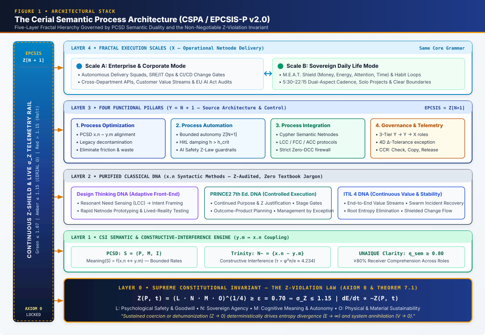
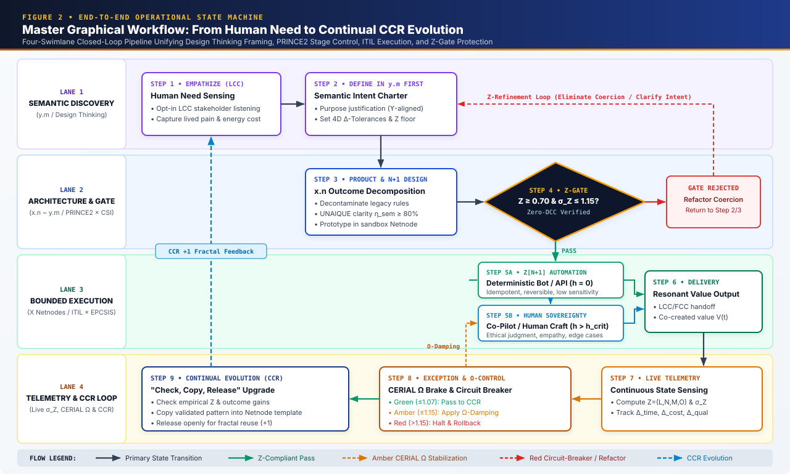
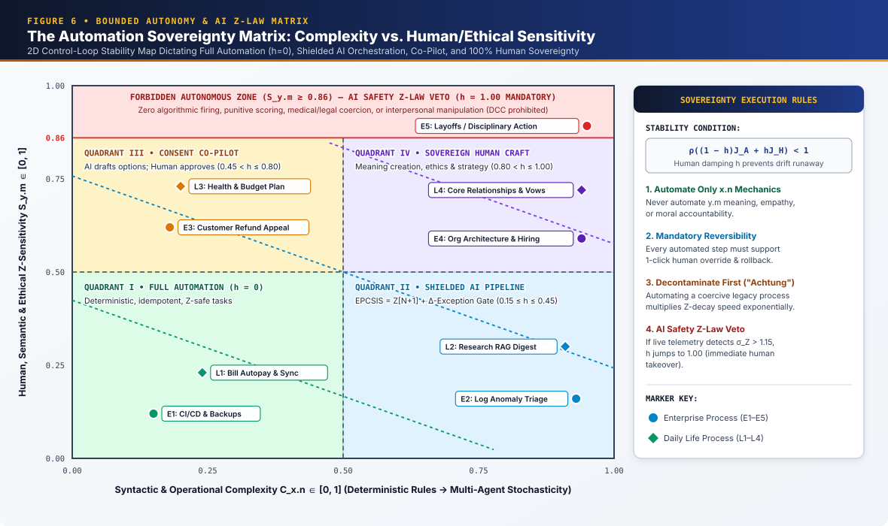
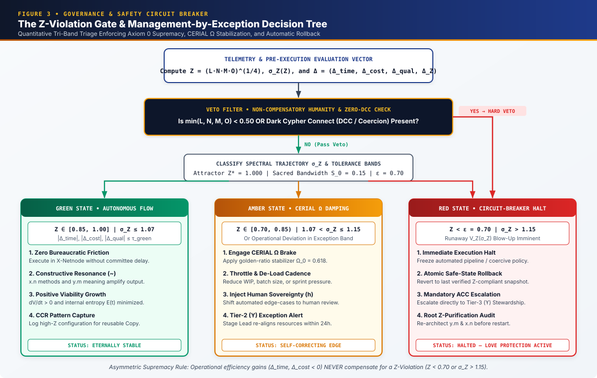
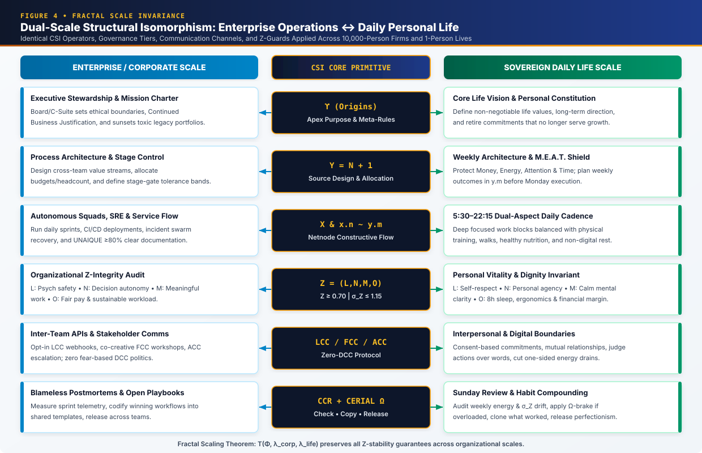
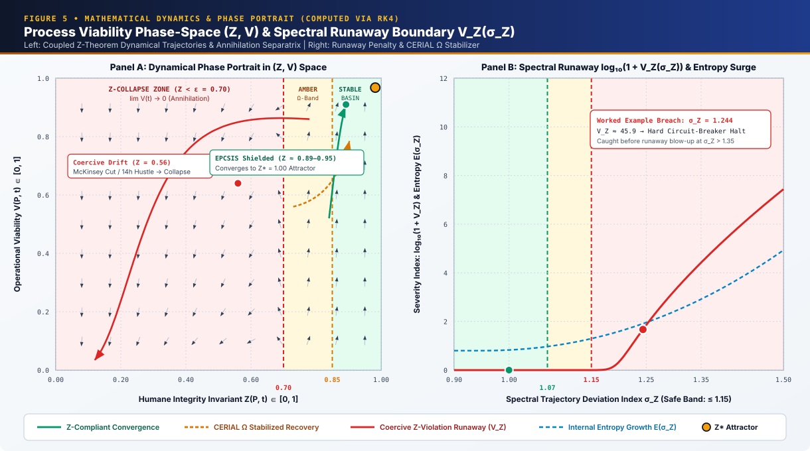

Cerial Semantic Process Architecture (CSPA / EPCSIS-P v2.0)
A self-contained, mathematically rigorous paradigm for Process Optimization, Bounded Automation, Semantic Integration, and Live Governance—synthesizing the purified DNA of ITIL 4, PRINCE2 (7th Ed.), and Design Thinking under the non-negotiable Z-Violation Law.
1. Foundational Axiom Lock & The Z-Violation Law
Legacy corporate frameworks treat process management as a purely mechanical exercise: boxes, queues, SLAs, and cost ratios. Yet empirical history across corporations, software architectures, and personal routines demonstrates a deterministic law discovered and formalized in Cypher Semantic Intelligence (CSI): whenever a process achieves short-term output through fear, coercion, opaque bureaucracy, or human exhaustion, internal disorder surges until the system collapses from within.
Unconditional Love and Humanity (Z) is not ethical decoration—it is a hard mathematical stability invariant. In every relational-semantic system S = (X, R, Φ, Σ), sustained erosion of Z(S, t) → 0 deterministically drives internal entropy divergence (dE/dt ∝ −Z, E → ∞), semantic incoherence of Σ, and irreversible viability annihilation (lim V(S, t) = 0).
1.1 Canonical Source Mapping from the CSI Corpus
Every structural rule in CSPA / EPCSIS-P v2.0 is anchored without drift in the workspace philosophy/ specifications:
| CSI Pillar / Theorem | Canonical Mathematical Expression | RAG Source Anchor | Direct Process Engineering Consequence |
|---|---|---|---|
| Relational-Semantic System | S = (X, R, Φ, Σ) |
The_Z_Theorem_Universal_Stability_Law.md (§2, Def. 2.1); Z-Theorem.docx |
A process is never just tasks (X) and transitions (Φ); it carries a live semantic state space Σ (intent, agency, trust). |
| Complementary Semantic Duality (PCSD) | S = ⟨P, M, I⟩, Meaning(S) = f(P ↔ M) |
principle_of_complementary_semantic_duality...md (§3–§4, §7) |
Formal methods (P ≡ x.n) without meaning (M ≡ y.m) create bureaucratic noise; meaning without structure creates hallucination. |
| Duality-to-Trinity Constructive Binding | N = {x.n, y.m} → N~ = {x.n ~ y.m} |
2024 CSI BASED PROCESS DESIGN...pdf (p. 2 spec v1.0.0.2); Cypher.Semantic...658.pdf (pp. 37, 41, 209) |
ITIL, PRINCE2, and Design Thinking supply x.n mechanics; CSI supplies y.m alignment. Optimal processes lock into balanced ~ resonance. |
| 4-Quality Humanity Vector | Z = (L, N, M, O) ∈ [0, 1] |
Cypher.Semantic...658.pdf (p. 38 / Dossier p. 34); Z-Violation-Theory_Whitepaper.pdf |
Love (goodwill/safety), N (agency/force), Mental (clarity), O (physical/material viability). Breaching any one collapses Z. |
| Spectral Trajectory & CERIAL Ω Brake | Z* = 1.000, S_0 = 0.15, Ω_0 = 0.618 |
z-violation-theory.py (ll. 14–53); Z-Violation-Theory.txt |
σ_Z ≤ 1.07: Green Flow; 1.07 < σ_Z ≤ 1.15: Amber CERIAL Ω damping; σ_Z > 1.15: Red runaway V_Z circuit-breaker halt. |
| EPCSIS Shielded Innovation | EPCSIS = Z[N + 1] = Z[Y] |
Cypher.Semantic...658.pdf (pp. 42–43 / Dossier pp. 38–39) |
Every optimization or AI automation step (N + 1) must be wrapped inside the protective Z-Shield Z[·]. |
| UNAIQUE Clarity & CCR Loop | η_sem ≥ 0.80; CCR = Check → Copy → Release |
2022.The.UNAIQUE.Algorithm...pdf (p. 2); Cypher.Semantic...658.pdf (pp. 2, 62, 74, 259) |
Every interface/SOP must achieve ≥80% first-read comprehension for its target persona; improvements compound openly via CCR. |
Directly codifying Sebastian Enger's 21.11.2024 architectural specification (2024 CSI BASED PROCESS DESIGN...pdf, p. 2):
1. Cost-Extraction Collapse: Auditing a production process solely as "too expensive" (x.n) and executing mass layoffs to fund short-term executive/shareholder bonuses violates Z (collapsing L and O), injecting systemic fear and destructive dissonance that deterministically destroys the enterprise over the medium term.
2. Legacy Contamination Warning: Grafting AI automation or new workflows onto an inherited corporate process built on an unbalanced y.m foundation (- fear/control or + ungrounded hype) corrupts the new system. Every brownfield process must pass a Z-Decontamination Gate before automation.

2. Deconstruction & The Z-Purification Matrix (ITIL 4 × PRINCE2 × Design Thinking)
Classical frameworks each solve one fragment of reality while leaving fatal blind spots: Design Thinking discovers human needs but lacks controlled execution; PRINCE2 bounds project risk and stages but degenerates into heavy document bureaucracy; ITIL 4 stabilizes ongoing services but calcifies into ticket-queue silos and rubber-stamp approval boards. Below, their 15 highest-leverage mechanisms are purified through the Z-Violation Audit into zero-jargon CSI primitives.
| Origin | Classical Primitive | Legacy Failure / Z-Violation Mode | Refactored CSI Process Primitive (Ready to Execute) |
|---|---|---|---|
| Design Thinking | 1. Empathize | Performative workshops or UX research weaponized into addictive dark patterns (DCC, L ↓). |
Resonant Need Sensing (LCC): Consent-based observation of lived human friction and energy cost. |
| Design Thinking | 2. Define | Framing problems strictly around internal conversion/cost KPIs while ignoring human externalities. | Semantic Intent Charter (y.m First): 3-sentence charter locking human need, +1 value, and Z ≥ 0.70 floor. |
| Design Thinking | 3. Ideate | Unbounded sticky-note theater (PCSD M-only hallucination) with zero operational follow-through. |
N + 1 Generative Options: Synthesize 3 concrete designs creating net-new value without zero-sum harm. |
| Design Thinking | 4. Prototype | Dumping fragile MVPs onto live operations without blast-radius limits or rollback paths. | Sandbox Netnode Trial: Validate inside an isolated, 1-click reversible Cypher Semantic Netnode. |
| Design Thinking | 5. Test | Measuring speed/clicks (x.n) while ignoring operator fatigue or user frustration (y.m). |
Dual-Aspect Resonance Test (x.n ~ y.m): Require passing scores on both output quality and human Z. |
| PRINCE2 (7th) | 6. Continued Business Justification | Sunk-cost zombie initiatives kept for politics, or predatory ROI cuts that violate human dignity. | Live Purpose & Z-Justification: Processes must continuously prove real value and Z ≥ 0.70, or sunset cleanly. |
| PRINCE2 (7th) | 7. Defined Roles & Accountability | Diffused committee responsibility ("everyone signed, nobody owns") paired with downward blame (N → 0). |
3-Tier CSI Sovereignty (ϒ / Y / X): Single-point stewards for Purpose (ϒ), Architecture (Y), and Delivery (X). |
| PRINCE2 (7th) | 8. Focus on Products | Surveillance of hours, activity logs, and busywork meetings instead of tangible outcomes. | Outcome-Artifact Contracts: Specify the finished artifact at η_sem ≥ 80% clarity; grant method autonomy. |
| PRINCE2 (7th) | 9. Manage by Stages | Month-long steering-committee delays and 80-page slide decks (dE/dt ↑). |
15-Minute Z-Stage Gates: Rapid pre-flight check verifying artifact readiness, rollback safety, and σ_Z ≤ 1.15. |
| PRINCE2 (7th) | 10. Manage by Exception | Constant micromanagement during normal ops followed by punitive panic during delays. | 4D Δ-Tolerance Bands: Zero interference in Green; CERIAL Ω damping in Amber; Circuit-Breaker in Red. |
| ITIL 4 | 11. Service Value System | Local department optimization creating cross-team handoff chasms for the end customer. | End-to-End Value-Resonance Stream: Connect coupled Netnodes from human trigger to verified relief. |
| ITIL 4 | 12. Incident Management | Tier 1→2→3 ticket ping-pong, robotic scripts, and chronic overnight on-call burnout (O ↓). |
Blameless Swarm Recovery: Instant cross-skill swarming to restore flow + protected recovery budgets. |
| ITIL 4 | 13. Problem Management | Lazy "human error" postmortems leaving broken tools and overloaded schedules intact. | Root Entropy & Z-Decay Fix: Eliminate structural x.n / y.m mismatches and latent coercion triggers. |
| ITIL 4 | 14. Change Enablement | Bureaucratic CAB bottlenecks slowing safe deployments while missing ethical/human risks. | EPCSIS Shielded Transition (Z[N+1]): Auto-approve Z-safe tests; require Z-Gate audit for human-facing changes. |
| ITIL 4 | 15. Continual Improvement | Top-down "reorg fatigue" that piles new rules onto old rules without ever pruning. | CCR Evolution Loop: Check telemetry → Copy proven high-Z patterns → Release openly & delete dead weight. |

3. Architecture of the Four Functional Process Pillars
Pillar 1 • Process Optimization (x.n ~ y.m Refinement)
- Order in
y.mFirst: Never automate or purchase software before writing a crisp 3-line Semantic Intent Charter. - Decontaminate Brownfield Debt: Strip fear-driven KPIs, redundant sign-offs, and contradictory incentives before redesigning steps.
- UNAIQUE ≥80% Clarity Rule: Every SOP, prompt, ticket template, and API spec must transfer ≥80% unambiguous comprehension on first read to its target persona.
Pillar 2 • Process Automation (EPCSIS = Z[N+1])
- Automate Syntax, Never Sovereignty: Delegate deterministic, repeatable
x.nmechanics to scripts/AI while keeping moral judgment and empathy sovereignly human. - Mandatory 60-Second Rollback: Every automated agent or deployment pipeline requires an instant human pause/rollback switch.
- AI Safety Z-Law Veto: Zero autonomous execution above human sensitivity
S_y.m ≥ 0.86(hiring/firing, legal/medical standing, disciplinary scoring).
Pillar 3 • Process Integration (Cypher Semantic Netnodes)
- LCC (Light Cypher Connect): Default opt-in, asynchronous, low-friction event handoffs with explicit payload schemas and SLAs.
- FCC (Force Cypher Connect): High-bandwidth co-creative synthesis sessions chartered to generate
N + 1architectural breakthroughs. - ACC vs. Banned DCC: Use
ACCstrictly for Stage Gates and Red Breaker escalations; enforce a zero-tolerance firewall against coerciveDCCpolitics and dark patterns.
Pillar 4 • Governance & Live Telemetry (ϒ → Y → X)
- 3-Tier Role Clarity: Tier 3 (
ϒ) guards purpose & ethics; Tier 2 (Y) designs stages & tolerances; Tier 1 (X) executes autonomously in Green bands. - CERIAL Ω Self-Correction: Amber drift (
1.07 < σ_Z ≤ 1.15) automatically triggers golden-ratio load damping (Ω_0 = 0.618) before failure occurs. - CCR Compounding: Every cycle closes with Check, Copy, Release—turning local wins into shared organizational or personal templates.

C_x.n) against Human/Ethical Sensitivity (S_y.m) with computed critical human damping contours (h_crit) and the AI Safety Z-Law Veto zone.
4. Dual-Scale Operational Playbooks: Enterprise ↔ Daily Life
Because CSI is built on scale-invariant relational laws (Fractal Self-Similarity Axiom, Cypher.Semantic...658.pdf, p. 202), practitioners do not maintain one rigid mentality at work and chaos at home. A multinational enterprise and a sovereign individual execute the exact same six primitives.

4.1 Scale A — Enterprise & Corporate Operations Playbook
| Enterprise Domain | Standard Legacy Pathology | CSPA / EPCSIS-P Execution Protocol |
|---|---|---|
| Portfolio & Change Governance | 50-page business cases followed by silent scope creep and burnout sprints. | 1-page Enterprise Process Canvas + 15-min Z-Stage Gate. Any initiative dropping Z < 0.70 is paused and refactored before budget release. |
| Cross-Team APIs & Handoffs | Slack/email interruptions, tribal jargon, and undocumented breaking changes. | Every team exposes a Cypher Semantic Netnode contract: versioned LCC intake, η_sem ≥ 80% documentation, and decoupled queue bulkheads. |
| SRE, Incidents & Cyber Resilience | Blame games, alert fatigue, and heroic 3 AM firefighting by exhausted engineers. | Zero-Incident proactive hardening + blameless FCC swarm channels, strict on-call recovery caps (O ≥ 0.85), and automated canary rollbacks. |
| AI Agents & Regulatory Compliance | Unbounded LLM bots hallucinating promises or violating GDPR / EU AI Act rules. | Wrap every agent in an EPCSIS = Z[N+1] guardrail: live σ_Z prompt/output audit, provenance logging, and <60s human override (h > h_crit). |
4.2 Scale B — Sovereign Daily Personal Life Playbook
| Personal Domain | Common Personal Z-Violation | CSPA Sovereign Life Protocol |
|---|---|---|
| M.E.A.T. Resource Shield | Saying "yes" out of guilt or people-pleasing until Money, Energy, Attention, and Time are depleted. | Audit every commitment against weekly M.E.A.T. budgets first (Cypher.Semantic...658.pdf, p. 8). Execute strictly 1 mission per time block. |
| 5:30–22:15 Dual-Aspect Cadence | Waking up straight into smartphone dopamine, 14h desk marathons, and 5h fragmented sleep. | 05:30 stretch/weights & clean nutrition → 07:00–17:30 focused work Netnodes → 18:00 hard cutoff, 45m outdoor walk & fresh meal → 21:00 book/chess/badminton → 22:15 phone outside bedroom (8h sleep). |
| Solo Projects & Knowledge Work | Endless tool-tweaking (x.n noise) or daydreaming without shipping (y.m hallucination). |
Order weekly +1 deliverable in y.m on Sunday, cap deep side-project sprints to sustainable high-clarity blocks, and close every Sunday with CCR. |
| Interpersonal Boundaries (Zero-DCC) | One-sided chasing, limerence, tolerating manipulative drama, or confusing promises with reality. | Enforce opt-in mutual LCC relationships: judge exclusively by consistent actions, step away from manipulative nodes, and let go of what cannot be forced. |
5. Mathematical Formalization of CSPA / EPCSIS-P
All equations below harmonize the formal system definitions of The_Z_Theorem_Universal_Stability_Law.md, PCSD, Cypher.Semantic...658.pdf, and the computational constants of z-violation-theory.py.
5.1 Process State-Space Tuple & Trinity Constructive Interference
A CSI Process evolving over time is defined as a 10-component dynamical system:
Here pairs syntactic/physical state vectors (x.n) with semantic/humane state vectors (y.m); is the zero-DCC Netnode graph enforcing UNAIQUE comprehension fidelity ; and applies the Trinity Binding Operator (~) with coupling constant :
5.2 Non-Compensatory Z-Invariant, Spectral Bridge & Viability ODEs
To enforce the canonical law that violating any single element of collapses system integrity, is defined via the geometric invariant paired with a bijective logarithmic bridge to (calibrated at , , and irreversibility floor ):
When (), the runaway instability score ignites, while coupled entropy and viability obey:

(Z, V) space (left) and logarithmic runaway severity log₁₀(1 + V_Z(σ_Z)) across Green, Amber, and Red regimes (right).5.3 EPCSIS Optimization Objective with Interior-Point Z-Barrier
Admissible process designs maximize constructive value and throughput minus entropy, shielded by a logarithmic barrier that diverges to as :
5.4 PRINCE2 × CSI Tolerance Vector & Automation Loop Stability
Live Management-by-Exception evaluates the 4D normalized deviation vector , where holds non-overridable veto priority ( Green; Amber -Brake; Red Circuit-Breaker). Simultaneously, an automated loop with machine Jacobian spectral radius and contractive human review gain remains Lyapunov-stable () if and only if the Human Sovereignty Fraction satisfies:
6. Worked Numerical Examples: Catching Z-Violations Before Collapse
Worked Example 1 (Enterprise): Automated Customer Support & Deployment Pipeline
Context: A 50,000-customer SaaS firm compares two restructuring proposals:
• Policy A (u_legacy — Coercive Cost-Cut): Cut 60% of support engineers, impose unpaid weekend on-call, bury human escalation behind a 5-loop bot (DCC), and auto-deploy code without canary rollback to claim a −28% short-term cost reduction.
• Policy B (u_CSPA — EPCSIS Shielded Redesign): Automate deterministic billing/status resets (h = 0), deploy a RAG Co-Pilot with 1-click human handoff (h = 0.45 > h_crit = 0.412), preserve sustainable team rotation, and enforce automated canary rollbacks (η_sem = 0.88).
| Calculation Step | Policy A: Coercive Cost-Cut (u_legacy) |
Policy B: EPCSIS Redesign (u_CSPA) |
|---|---|---|
| 1. 4-Vector Inputs (L, N, M, O) | L = 0.58, N = 0.51, M = 0.55, O = 0.60 |
L = 0.91, N = 0.88, M = 0.89, O = 0.89 |
| 2. Composite Z = (L·N·M·O)¹ᐟ⁴ | (0.097614)¹ᐟ⁴ = 0.5589 < ε = 0.70 |
(0.634310)¹ᐟ⁴ = 0.8924 ≥ 0.85 |
| 3. Spectral Trajectory σ_Z | 1 + 0.15 · ln(1/0.5589)/ln(1/0.70) = 1.2447 > 1.15 |
1 + 0.15 · ln(1/0.8924)/ln(1/0.70) = 1.0479 ≤ 1.07 |
| 4. Runaway Penalty V_Z(σ_Z) | (0.2447 − 0.15)³ · (1.2447)⁵⁰ = 48.38 (Blow-up!) |
0.000 (Inside safe S_0 = 0.15 attractor) |
| 5. Objective 𝒥 & Gate Verdict | Barrier ln(0.5589 − 0.70) undefined → 𝒥 = −∞RED CIRCUIT-BREAKER HALT |
Δ_cost = −14%, Δ_time = −32%, 𝒥 = +0.836GREEN AUTONOMOUS FLOW |
Diagnostic Proof: Traditional financial accounting applauds Policy A's −28% cost line until customer churn and senior engineer resignations trigger an outage spiral two quarters later. Equation 3 and Equation 6 catch the Z-Violation on Day 0 (σ_Z = 1.2447) and block deployment automatically.
Worked Example 2 (Daily Life): Solo Architect Weekly Overload vs. Sovereign Cadence
Context: A systems architect holds a demanding 9-to-5 engineering role while developing an independent AI platform:
• Schedule A (u_overload — 14h Reactive Hustle): Works 07:00–23:30 daily on screens, sleeps 5.5h with phone alerts active, skips outdoor walks, and checks unreciprocated messages compulsively.
• Schedule B (u_sovereign — CSPA 5:30–22:15 Rhythm): Applies CERIAL Ω damping (1 − Ω_0 = 38.2% cap on discretionary evening load → 5–8h/week pure deep focus), locks 18:00 walk + dinner, offline reading/sport at 21:00, and 8h phone-free sleep.
| Calculation Step | Schedule A: 14h Reactive Hustle (u_overload) |
Schedule B: Sovereign Cadence (u_sovereign) |
|---|---|---|
| 1. Personal (L, N, M, O) | L = 0.66, N = 0.70, M = 0.52, O = 0.41 (Veto 4!) |
L = 0.92, N = 0.93, M = 0.90, O = 0.90 |
| 2. Personal Invariant Z | (0.098498)¹ᐟ⁴ = 0.5602 < 0.70 |
(0.693036)¹ᐟ⁴ = 0.9124 ≥ 0.85 |
| 3. Spectral Trajectory σ_Z | 1 + 0.15 · ln(1/0.5602)/ln(1/0.70) = 1.2437 > 1.15 |
1 + 0.15 · ln(1/0.9124)/ln(1/0.70) = 1.0386 ≤ 1.07 |
| 4. Runaway V_Z & Verdict | V_Z = 45.89 + Veto 4 (O < 0.50)HALT • 48h RECOVERY RESET |
V_Z = 0.000 • High constructive clarityETERNALLY STABLE CADENCE |
Diagnostic Proof: Schedule A logs more raw hours (x.n) while driving physiological sustainability O = 0.41 below the hard Veto floor, guaranteeing cognitive collapse. Applying the golden-ratio CERIAL Ω brake restores Z = 0.9124 (σ_Z = 1.039), doubling constructive output per focused hour via Equation 2.
7. The 60-Minute Zero-Prerequisite Launch Protocol & Templates
You now hold the complete operational essence of ITIL 4, PRINCE2, Design Thinking, and Cypher Semantic Intelligence in one unified grammar. Follow the four 15-minute blocks below to put your first process live under Z-Protection within the next hour.
| Clock Block | Execution Step | Concrete Output Artifact |
|---|---|---|
| Minutes 00–15 | Order in y.m & Strip Legacy Debt: Select one high-friction corporate workflow or personal weekly routine. Write its real human need, +1 outcome artifact, and delete obvious DCC bureaucracy. |
Completed Sections 1 & 2 of Process Canvas |
| Minutes 15–30 | Run the 12-Point Z-Audit: Score L, N, M, O, check the 4 Hard Vetoes, and compute Z and σ_Z. Refactor any score below 0.70 immediately. |
Signed Z_Violation_Audit_Checklist (Z ≥ 0.70) |
| Minutes 30–45 | Map Sovereignty & LCC Contracts: Assign each step to Quadrant I–IV (h = 0 Auto vs. Co-Pilot vs. h = 1 Human) and verify ≥80% UNAIQUE handoff clarity. |
Completed Section 4 + 60-second rollback path |
| Minutes 45–60 | Lock 4D Tolerances & Book CCR: Define Green/Amber/Red thresholds for Δ_time, Δ_cost, Δ_qual, σ_Z and schedule a recurring 15-minute weekly Check, Copy, Release review. |
Live self-correcting CSPA Netnode in operation |
Ready-to-Print 1-Page Field Templates
1. Enterprise Process Canvas
1-page A4 specification for teams, IT/SRE services, AI pipelines, and cross-departmental stage gates.
2. Daily Life Process Canvas
1-page personal architecture canvas for M.E.A.T. protection, 5:30–22:15 cadence, and solo sprints.